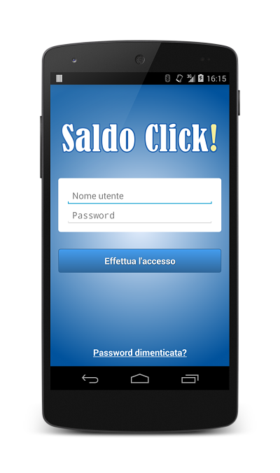
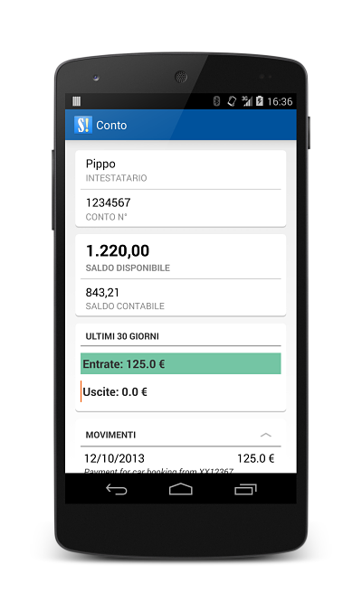

Welcome to Saldo Click!.
This simple and stunning app let you to check you BancoPostaClick's checking account in a simple and quick way. Check it out!
 Contribute
This project is completely open source, so contributions are welcome. Fork this project using this commands.
$ git clone https://github.com/cando/SaldoClick.git
$ git remote add upstream https://github.com/cando/SaldoClick.git
Authors and Contributors
Stefano Candori
Support or Contact
Having trouble with Saldo Click!? Contact me at kendrix16@yahoo.it and we’ll help you sort it out.